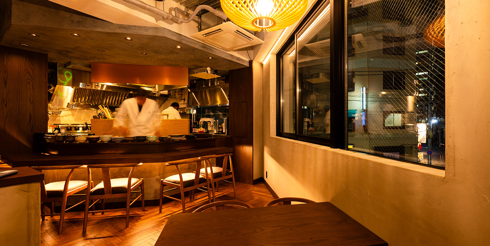
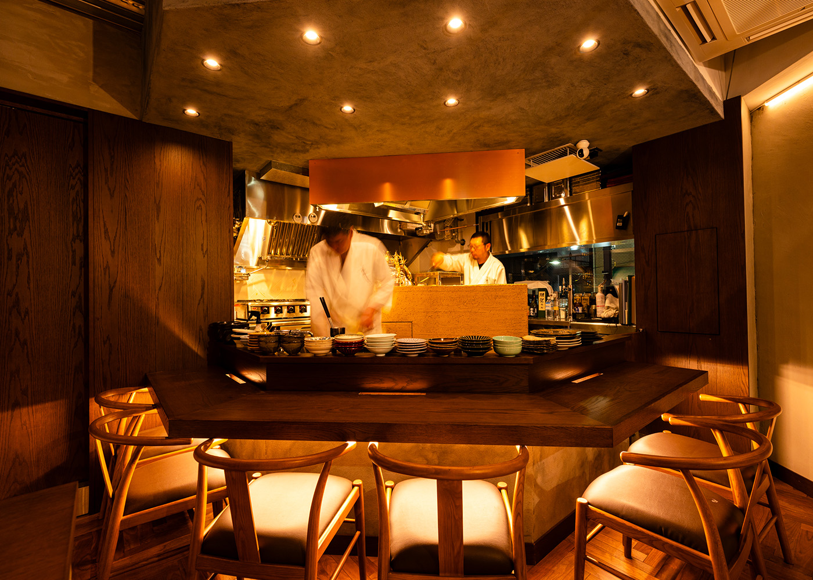
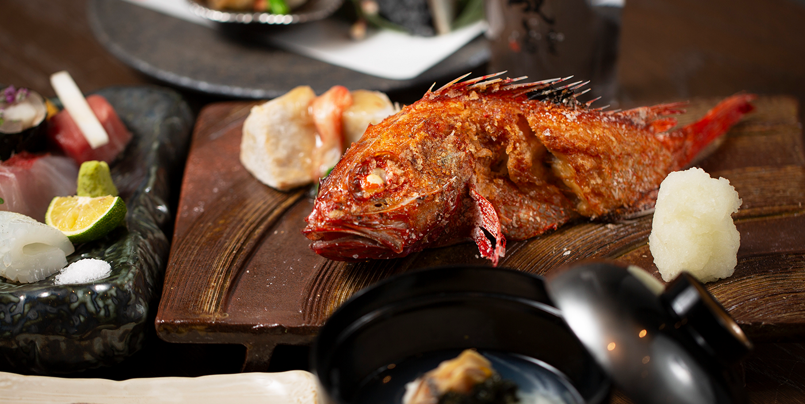

大人が気兼ねなく飲める
隠れ家江戸前割烹
「錦糸町炭火成る」は、
炭火と土鍋ご飯にこだわり、
本質的な美味しさを追求しています。
季節ごとの旬の味覚とともに、
大人が心から落ち着ける食の時間を提供します。
「日本の旨いを追求し、
大人が通い続けるお店になる」——
そんな想いを胸に、
食材の選定から炭の扱い、
お米の炊き加減まで、
一切の妥協をせずにこだわり抜きました。
「錦糸町炭火成る」で、
心休まる食の時間を過ごしませんか？

席・空間
SPACE
隠れ家感のある落ち着いた
店内
隠れ家のような落ち着いた雰囲気で、大切な方との特別な時間を彩ります。
カウンター席では、職人が目の前で調理する臨場感と、炭火の温かい香りを感じながらお食事を楽しめます。
接待や会食に最適な個室も完備。
特別な空間で、日本の「旨い」を存分にご堪能ください。

カウンターの目の前で、職人が炭火と向き合う。
香ばしい炭の香りとともに、焼きたてをお召し上がりいただけます。
店舗情報
ACCESS錦糸町 炭火 成る
- 住所
- 〒130-0022 東京都墨田区江東橋2丁目7-6 Uビル2階
- 電話番号
- 03-6659-6886
- 営業時間
- 17:00～23:00（L.O.22:00）
- 定休日
- 不定休
- アクセス
- 錦糸町駅徒歩4分
- 席数
- 全14席（カウンター6席・テーブル4席・完全個室4席）
- 個室
- 2〜3名様（4名様は要電話相談）
2名様でご利用の場合、個室料3,000円を頂戴致します。 - 貸切
- 20名様以下
- お支払い
- キャッシュレス決済のみ（現金不可）
チャージ料なし - 喫煙
- 全席禁煙